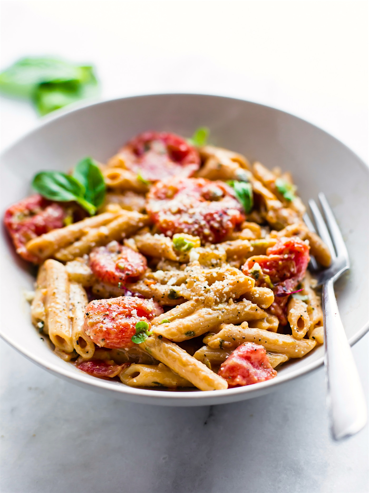

Pasta

Description
Ingredients
- Durum wheat flour
- Water
- Eggs (optional)
Steps
- Add 2 cups durum wheat flour to a mixing bowl, making a well in the center.
- Crack 3 large eggs into the well and use a fork to whisk them together, gradually incorporating the flour until a shaggy dough forms.
- Knead the dough on a floured surface for about 10 minutes until smooth and elastic. If the dough feels too dry, add a little bit of water.
- Cover the dough with a damp cloth and let it rest for at least 30 minutes.
- Cut the dough into four equal pieces.
- Flatten one piece of dough with a rolling pin or use a pasta machine to roll it out into a thin sheet.
- Cut the sheet into desired pasta shape with a knife or pasta cutter.
- Repeat the process with the remaining pieces of dough.
- Bring a large pot of salted water to a boil.
- Add the pasta to the boiling water and cook for 2-3 minutes (depending on the thickness and shape of the pasta) until al dente.
- Drain the pasta in a colander or strainer and serve it with your favorite sauce or toppings.